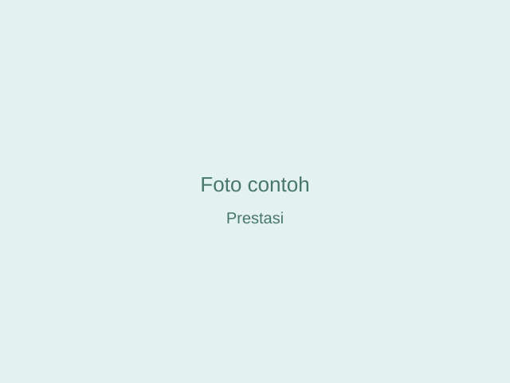
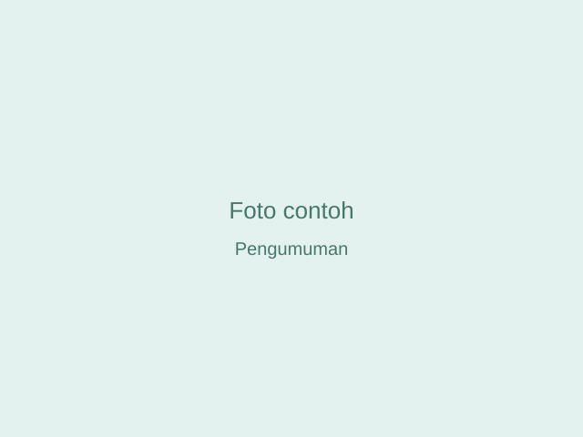
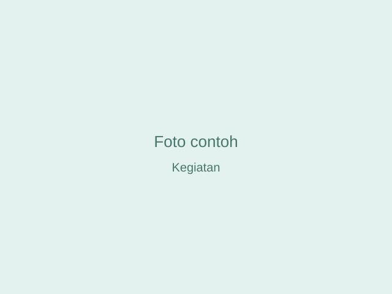

SMPN 5 Kupang Raih Juara 1 Lomba Cerdas Cermat Tingkat Kota
Tim LCC sekolah berhasil menyisihkan perwakilan dari 18 SMP di Kota Kupang setelah melalui tiga babak.
Baca selengkapnyaKabar terbaru dan capaian siswa SMP Negeri 5 Kota Kupang.

Tim LCC sekolah berhasil menyisihkan perwakilan dari 18 SMP di Kota Kupang setelah melalui tiga babak.
Baca selengkapnya
Pendaftaran melalui portal resmi Dinas Pendidikan Kota Kupang dengan empat jalur.
Baca selengkapnya
Pelatihan dua hari membahas perpustakaan digital dan keamanan daring.
Baca selengkapnyaLomba puisi, pidato, dan pameran karya siswa memeriahkan bulan bahasa.
Baca selengkapnyaDua siswa melaju ke tingkat provinsi pada bidang matematika dan IPA.
Baca selengkapnyaSeluruh kelas bergotong royong membersihkan ruang belajar dan halaman.
Baca selengkapnyaDiskusi praktik baik pengelolaan perpustakaan dan layanan administrasi.
Baca selengkapnyaAnggota Pramuka berlatih keterampilan tali, kompas, dan pertolongan pertama.
Baca selengkapnyaUpacara dan pentas seni budaya mengangkat tema persatuan generasi muda.
Baca selengkapnyaTim Putra
Elisabeth R. Peni
Matematika & IPA
Tim LCC
Yosef A. Manu
Tim Robotik